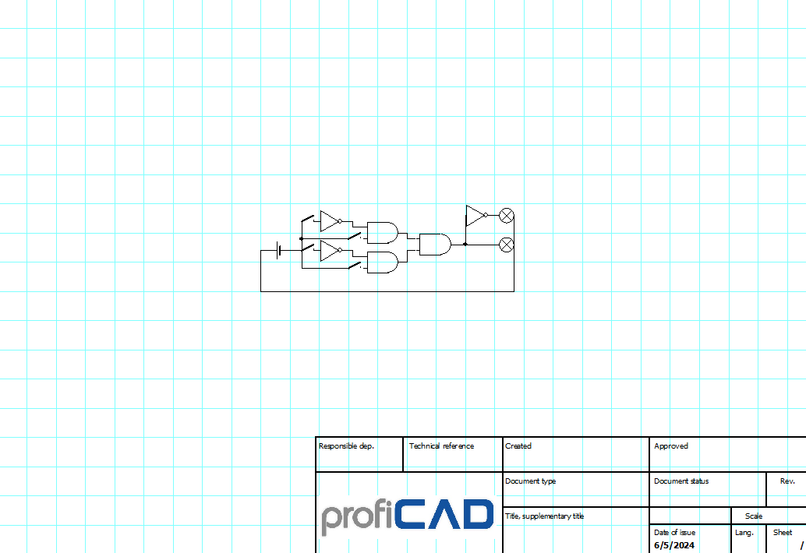

Welcome to John's Robotics! Today, we'll explore a basic yet fascinating project: a simple electronic code lock. This project not only helps you understand the fundamental components of electronics but also introduces you to the world of logic gates.
An electronic code lock is a security device that allows access only when a specific code is entered. The image below shows the electronic components used to build a basic version of such a lock. Let's break down the components and their roles in this project.
Logic gates are the fundamental components of digital circuits. They take one or more binary inputs and produce a binary output. Here are the most common types of logic gates:
In our simple code lock, we use a combination of these logic gates to determine if the correct code is entered. For example, if the code is "1010", which is the correct combination, we can use two NOT gates to convert the 0s to 1s and then a handmade 4-input AND gate to check if all the inputs are now '1', if the combination is correct the green LED will light up, indicating unlocking of the device. The red LED will light up when the combination is incorrect and a NOT gate gets the off input from the 4-1nput AND gate and turn it into an on output for the red LED.
*The symbol with an 'X' inside a circle means one LED with correct polarity and a resistor connected in series with it in this schematic*
This simple electronic code lock is an excellent project to get hands-on experience with basic electronics and logic gates. By understanding how these components work together, you can create more complex and secure electronic systems in the future.
Stay tuned for more exciting projects and tutorials at John's Robotics!